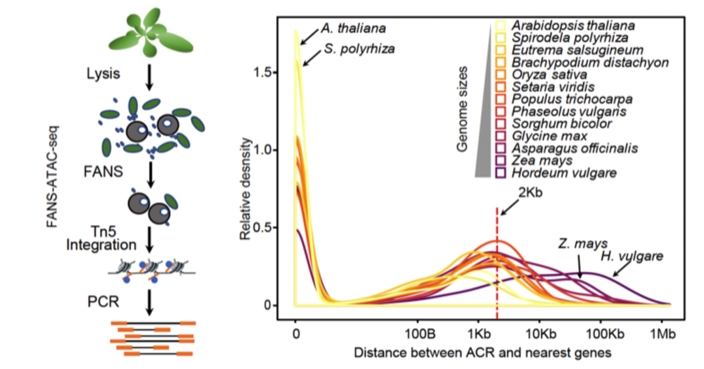
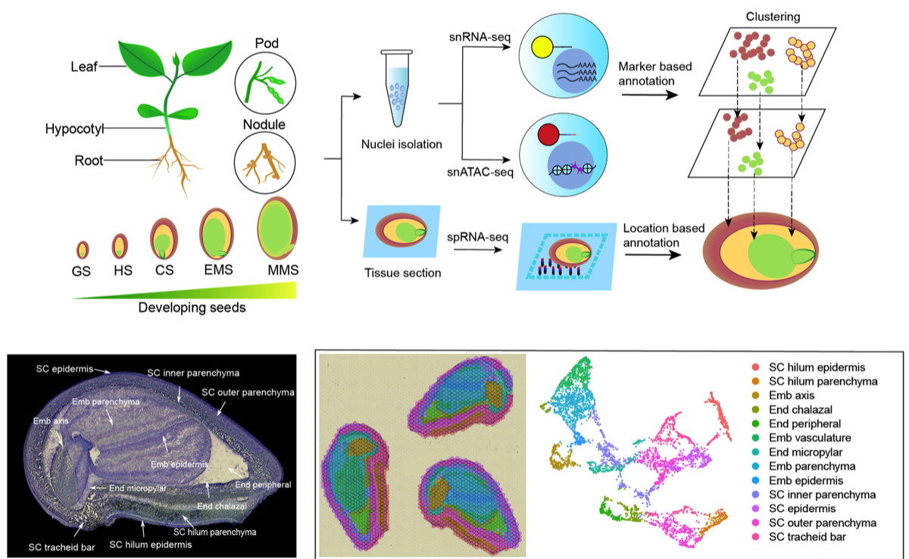
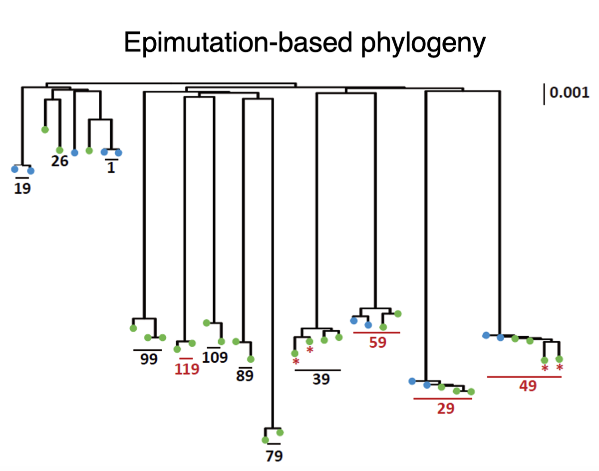
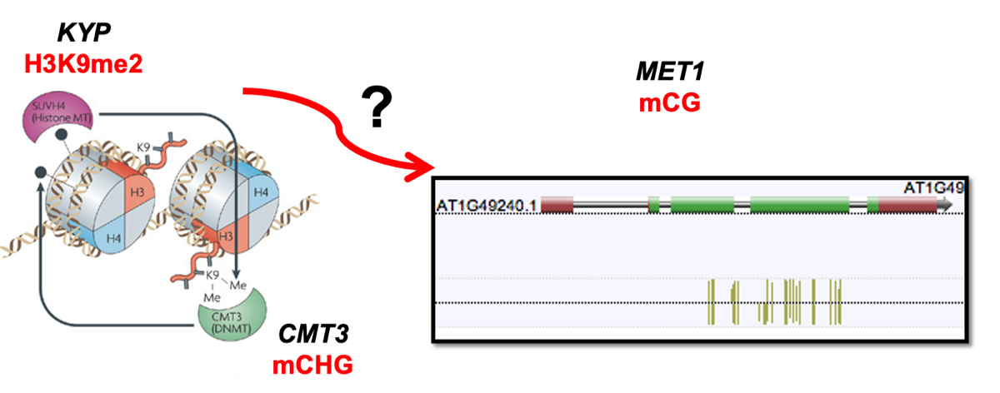

Research Focus
The Schmitz Lab at the University of Georgia explores the role of genetic and epigenetic variation in plant genome evolution. Our work also investigate the interplay between variation of cis-regulatory elements and epigenetic variation, especially in crop species, to uncover strategies for enhancing plant breeding and agricultural productivity. By leveraging high-throughput sequencing and advanced computational biology, we aim to decipher the complex regulatory networks that govern plant development and response to environmental stressors.
Cis-Regulatory Element Identification, Activity and Evolution:
We also investigate the role of cis-regulatory elements in shaping plant gene expression. By mapping these elements across the genome and diverse species, we aim to decipher how they interact with transcription factors and contribute to the regulation of critical genes. Understanding the function of cis-regulatory elements is crucial for uncovering the genetic basis of trait variation and enhancing crop improvement strategies.

Combining nuclei sorting with ATAC-seq reveals regions of chromatin accessibility and candidate cis-regulatory elements in plant genomes. The distance of accessible chromatin and their associated cis-regulatory elements to their nearest genes is greater in plants with larger genomes.
Single-Cell Genomics:
We are pioneering the use of single-cell genomics to unravel the complexities of plant cellular heterogeneity. By examining the epigenetic and transcriptomic profiles of individual cells, our research provides insights into cell-specific gene regulation, developmental processes, and responses to environmental stimuli. This approach allows us to identify key regulatory networks at an unprecedented resolution, advancing our understanding of plant biology and enabling targeted agricultural interventions.

Single-Cell Genetic Screens:
We are using single-cell genetic screens to perturb target sequences and evaluate their function in a high-throughput manner. This cutting-edge approach allows us to systematically assess the impact of genetic variations on cellular phenotypes, providing a powerful tool to identify key functional elements in the genome. These screens are essential for uncovering the genetic basis of important traits and developing novel strategies for crop improvement.
Discovery and Uses of a Plant Evolutionary Epigenetic Clock:
Our research has led to the discovery of a plant evolutionary epigenetic clock, which differs from the animal epigenetic clock by estimating divergence times between individuals rather than age. This clock is capable of determining how recently two individuals shared a common ancestor within the last few hundreds or thousands of years. Its applications extend to conversation biology and understanding plant adaptation to climate change.

Molecular Mechanisms of Epiallele Formation:
Our recent publications have advanced the understanding of how epialleles—inherited changes in gene expressions caused by epigenetic modifications rather than DNA sequence changes—are formed. By dissecting the molecular processes leading to epiallele establishment, maintenance, and their influence on plant phenotypes, we aim to leverage this knowledge for breeding programs and to enhance plant resilience to environmental stressors.

Our goal is to translate these fundamental discoveries into practical applications, contributing to sustainable agriculture and food security.